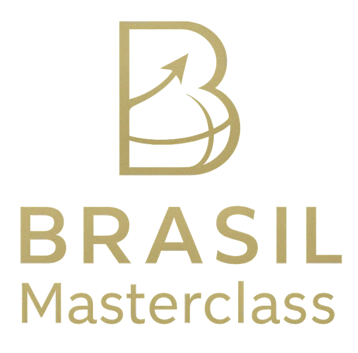

Destinos y secretarías
Equipos públicos y DMO que preparan oferta, comunicación y trade para mercados internacionales.

Brasil Masterclass es una ruta de capacitación que transforma conocimiento de mercado en preparación internacional para destinos, productos y profesionales del turismo brasileño.
Brasil Masterclass organiza estrategia de mercado, posicionamiento comercial, branding y relación internacional en una ruta clara y práctica. La propuesta conecta lo que Brasil ya entrega con excelencia con las expectativas, canales y dinámicas de compra de los mercados internacionales.
Equipos públicos y DMO que preparan oferta, comunicación y trade para mercados internacionales.
Empresas que fortalecen posicionamiento, producto, negociación y distribución fuera de Brasil.
Productos turísticos que amplían competitividad, claridad comercial y presencia en nuevos mercados.
Organizaciones que construyen capacidades de internacionalización en sus territorios.
Prioridades, mercados, comportamiento de compra, canales y criterios para decidir dónde y cómo competir.
Propuesta de valor, argumentos comerciales, estructura de producto, pricing y preparación para buyers globales.
Narrativa, contenido, diferenciación, presencia digital y comunicación adaptada a mercados prioritarios.
Ferias, rondas, operadores, aliados, seguimiento y construcción de relaciones comerciales consistentes.
Brasil Masterclass forma parte de la capacidad de Market Education & Trade Enablement de Lipe Travel Hub y también aparece entre los productos aliados del ecosistema Bureau Mundo.
Podemos estructurar una edición institucional personalizada o registrar tu interés en la edición profesional.